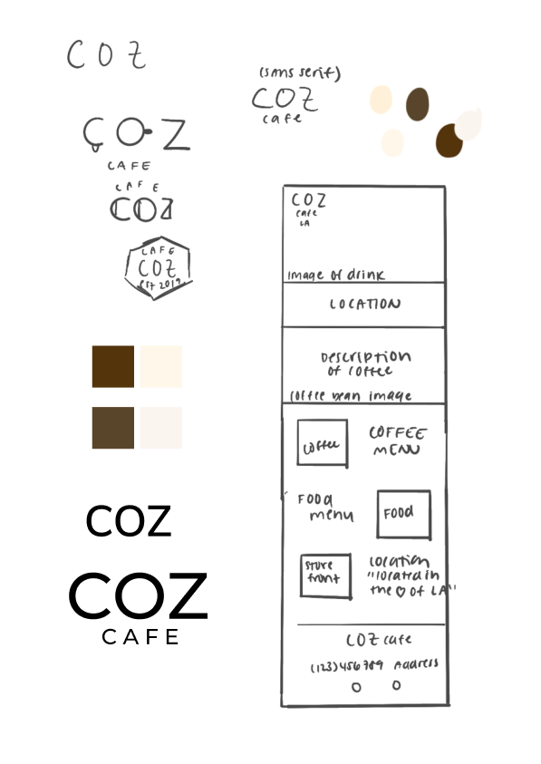

Coz
I designed the homepage for a coffee shop as a part of a design challenge for a club. Here’s the outcome.
The Prompt
A new, locally-owned cafe called "Coz Cafe" is opening up near USC and requested help from you! They sell bakery goods but specialize in locally-sourced coffee and have a warm and cozy interior. They pride themselves in community, sustainability, and quality foods and drinks.
Coz Cafe wants you to design the home page of their website to show off images of their drinks, display their store hours and location, and entice users to visit the cafe.
The Process
I was given a few hours to complete this design alone.
I began by moodboarding, finding as many coffee shop websites as I could. Using these, I compiled a list of the content I needed in the page, and build a brand aethestic to follow.
I then sketched out a rough wireframe in Procreate, testing different colors to be used in the website.

Lastly, I put everything together on Figma, playing with fonts as I went until I found one that fit best.
In total, this project took me around 3 hours. Enjoy!